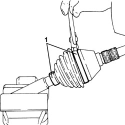
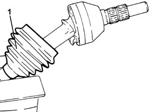
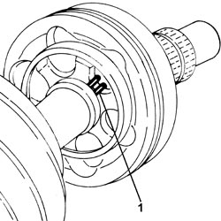
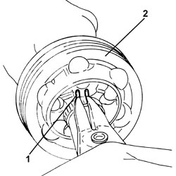
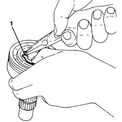
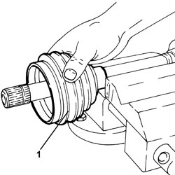
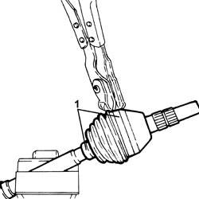

2710A20 WHEEL SIDE CONSTANT VELOCITY JOINT (ONE), L/H OR R/H - R + R WITH DRIVESHAFT REMOVED - INCLUDES BOOT REPLACEMENT
- Path
- Procedures > 27 AXLE > 2710 FRONT AXLE > 2710A DRIVESHAFTS AND JOINTS > 2710A20 WHEEL SIDE CONSTANT VELOCITY JOINT (ONE), L/H OR R/H - R + R WITH DRIVESHAFT REMOVED - INCLUDES BOOT REPLACEMENT
- Kind
- repair procedure (removal / refitting; the operation number is the code)
- Applies to
- all engines; all production periods
- Interactive page
- https://sloeber94.github.io/elrnDB-fCrm/en/#/194000463
Applies to: all engines; all production periods
 Removing
Removing
 Refitting
Refitting- Position the driveshaft in a vice fitted with protective jaws.
1. Remove the bands securing the protective boot using a suitable tool.

Applies to: all engines; all production periods
1. Retract the protective boot on the driveshaft.

Applies to: all engines; all production periods
1. Clean the driveshaft constant velocity joint until the safety ring is accessible.

Applies to: all engines; all production periods
1. Extend the safety ring using suitable pliers.
2. Extract the wheel side constant velocity joint from the driveshaft.

Applies to: all engines; all production periods
1. Remove the wheel side constant velocity joint safety ring.

Applies to: all engines; all production periods
1. Remove the protective boot.

Applies to: all engines; all production periods
Refitting
Removing- Carefully wash the constant velocity joint components using diesel oil or petrol and check for signs of binding or scoring on the balls and their seats.
- Position the new protective boot on the driveshaft.
1. Place a new safety ring in the housing on the constant velocity joint.
Applies to: all engines; all production periods
- Place the wheel side constant velocity join in its housing on the driveshaft.
- Fill the joint and the boot with the specified grease.
Component | Type | Description | Classification | Qty. | Validity |
|---|---|---|---|---|---|
FRONT DRIVESHAFT WHEEL SIDE CONSTANT VELOCITY JOINT | Grease (g) | TUTELA STAR 500 | NLGI 2 | 150 | 2.2 |
Component | Type | Description | Classification | Qty. | Validity |
|---|---|---|---|---|---|
FRONT DRIVESHAFT WHEEL SIDE CONSTANT VELOCITY JOINT | Grease (g) | TUTELA STAR 500 | NLGI 2 | 160 ± 10 | 1.8 |
Component | Type | Description | Classification | Qty. | Validity |
|---|---|---|---|---|---|
FRONT DRIVESHAFT WHEEL SIDE CONSTANT VELOCITY JOINT | Grease (g) | TUTELA STAR 500 | NLGI 2 | 120 | 1.9 JTD 8V 1.9 JTD 16V 2.4 JTD 20V |
- Place the boot in position on the constant velocity joint and on the driveshaft.
1. Fit two new bands securing the boot using a suitable tool.

Applies to: all engines; all production periods
- Remove the driveshaft from the vice.